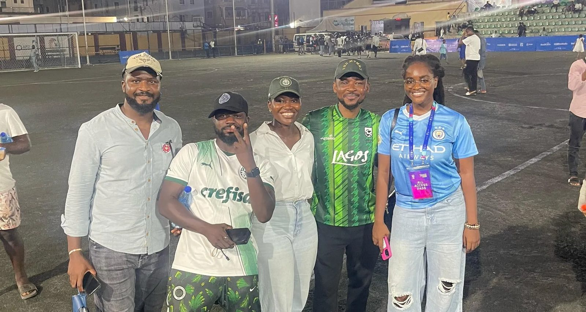

Projects
Turning Lagos Liga into a content business
Running five platforms for one of Africa's largest recreational football leagues, and growing it into a brand people talk about between matches.

01
Context
Lagos Liga is one of Africa's largest private recreational football leagues, bringing together non-professional footballers, ex-players and fans. The brand had real energy, but it hadn't turned that into digital presence.
02
The challenge
Great matches, quiet channels. The league needed to stay relevant between game days and give its community a reason to share.
03
What I did
- Took over Instagram, Facebook, TikTok, YouTube and X at the same time, plus live coverage of physical and virtual events.
- Identified what made Lagos Liga unique among football leagues and made it impossible to ignore.
- Spotlighted everyone: club owners, coaches, players, partners and vendors, so each stakeholder wanted to share.
- Repositioned the league as a content business that stays relevant between matches.
04
Outcome
Also trended on X organically, with no paid push.
05
What I learned
When people feel seen, they amplify for free. The fastest growth came from making every stakeholder feel important.
06
In their words
“I knew you were good at your stuff, but I saw how that competence got matched with personality, character and street depth. I don't think I ever want to do any venture without going with you.”